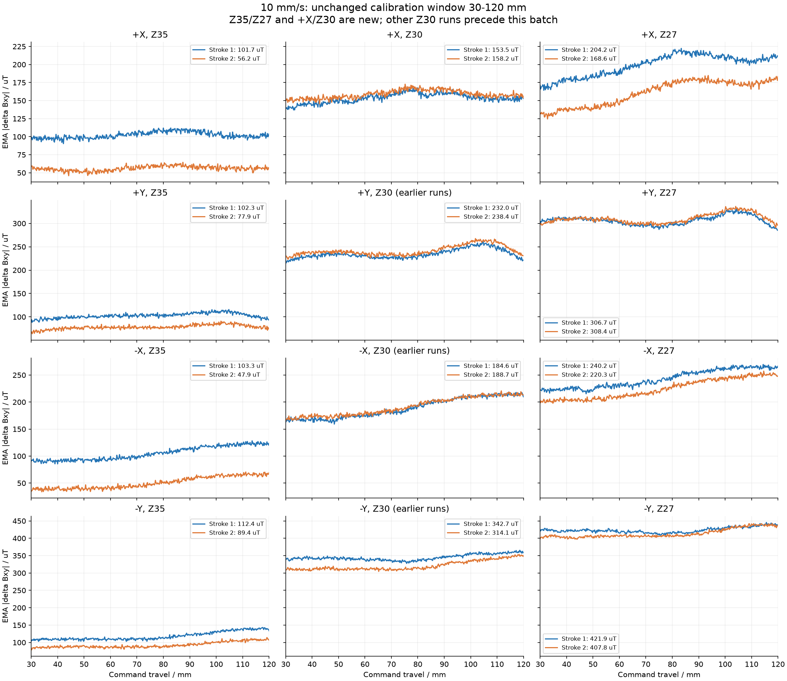
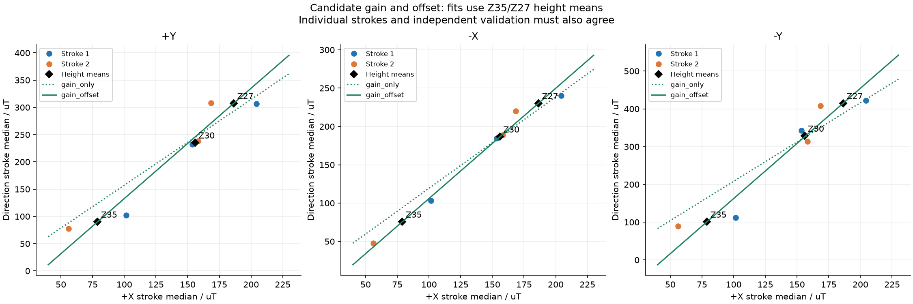
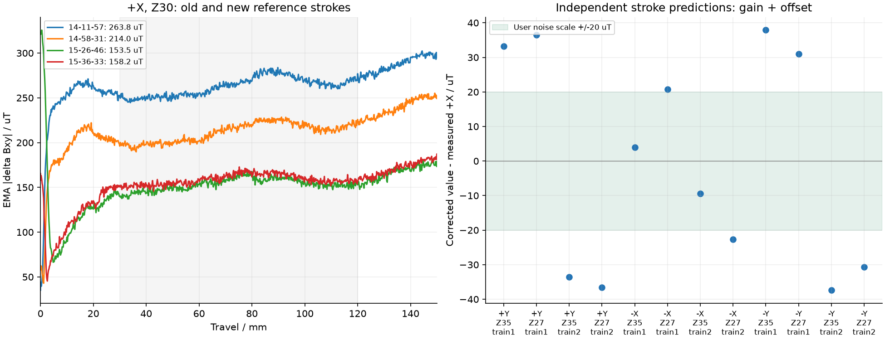
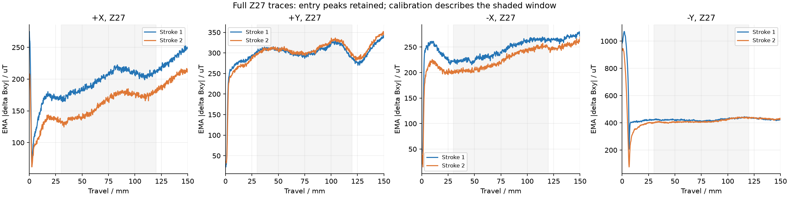

新增18笔全部齐全：Z35/Z27各四方向×两笔，另有两笔+X/Z30参照。累计10月5日48笔，不含9月27日记录。
沿用用户设定的约20 uT噪声量级，忽略水的影响，不安排空载背景实验。20 uT只是比较尺度，不是本批估计的标准差或统计置信限。
增益+偏置能很好描述高度均值：由新增Z35/Z27的两笔均值拟合，+Y/-X/-Y候选k约2.023/1.439/2.920，b约-69.59/-37.94/-129.54 uT。Z30的均值换算误差约-5.24/+0.21/+0.94 uT。均值一致尚未证明单笔校准稳定。
独立笔次验证失败集中在Y方向：用第一笔的Z35/Z27拟合、预测第二笔，再交换训练与验证，+Y/-X/-Y换算到X的RMSE分别约35.0/16.2/34.4 uT，最大误差约36.6/22.7/37.9 uT。-X可作初步试验，其余方向仍不能称为20 uT量级内的稳定统一校准。
浅压Z35重复性不足：+X/-X两笔中段中位数分别下降45.48/55.38 uT，+Y/-Y也下降24.40/22.93 uT。Z27的+X下降35.69 uT，而+Y/-X/-Y变化约+1.74/-19.89/-14.06 uT。
X参照发生明显批次变化：旧Z30两笔263.83/213.97 uT，新增参照153.54/158.21 uT，均值下降约83.02 uT。新增两笔Z30彼此很近，不能因此把旧X表与所有新高度直接合并。
X第二笔从Z30到Z27只增加约10.35 uT，低于用户指定的20 uT噪声量级。这支笔在该记录下对两种高度的磁区分度不足，三点插值不能自动解决。
Z27/-Y两笔起笔峰值约1070/945 uT，分别出现在沿程约2.00/0.64 mm；中段约422/408 uT。当前模型仅描述30-120 mm中段，不覆盖这些起笔瞬态。
沿程30–120 mm。Z35/Z27全部新增；Z30只有+X为新增，其他方向为前批记录。
| 方向 | Z35 两笔 | Z30 两笔 | Z27 两笔 |
|---|---|---|---|
| +X | 101.7 / 56.2 | 153.5 / 158.2 | 204.2 / 168.6 |
| +Y | 102.3 / 77.9 | 232.0 / 238.4 | 306.7 / 308.4 |
| -X | 103.3 / 47.9 | 184.6 / 188.7 | 240.2 / 220.3 |
| -Y | 112.4 / 89.4 | 342.7 / 314.1 | 421.9 / 407.8 |
| 传感器帧数 | invalid传感器 | TCP样本 | invalid TCP | 最大TCP Z偏差/mm |
|---|---|---|---|---|
| 166603 | 0 | 6551 | 0 | 0.19200000000000017 |
g方向 = k × gX + b；校正值 gX = (g方向 − b)/k。参数仅供离线分析，未写入控制配置。拟合使用新Z35/Z27的高度均值。
| 方向 | k | b/uT | Z30均值换算误差/uT |
|---|---|---|---|
| +Y | 2.0232 | -69.59 | -5.24 |
| -X | 1.4388 | -37.94 | 0.21 |
| -Y | 2.9204 | -129.54 | 0.94 |
用一组笔次拟合两个新高度，另一组验证，再交换。下表误差已换算到X尺度；20 uT仅为用户给定比较量级。
| 方向 | 模型 | RMSE/uT | 最大绝对误差/uT | 20 uT内条件数/4 |
|---|---|---|---|---|
| +Y | gain_only | 37.59 | 51.25 | 1 |
| +Y | gain_offset | 35.02 | 36.56 | 0 |
| -X | gain_only | 18.46 | 23.97 | 3 |
| -X | gain_offset | 16.22 | 22.72 | 2 |
| -Y | gain_only | 38.40 | 53.56 | 1 |
| -Y | gain_offset | 34.42 | 37.88 | 0 |




暂不扩大到更多速度或对角线。先固定10 mm/s，保持装配、纸面高度和进笔方式一致，检验浅压参考与加载历史的重复性。
先做+X的顺序对照，共4笔：第一组Z35→Z27，第二组Z27→Z35，每个顺序条件一组；这样两个高度各两笔，保留实际TCP及进笔/加载阶段。用这些记录检查Z35在深压之后是否系统降低。
若顺序影响达到当前噪声量级以上，先统一每笔之间的恢复/等待和加载协议，再按统一协议建立多高度参考。若顺序对照稳定，补同期Z30四方向各两笔（8笔），与稳定的Z35/Z27进行完整验证。
-X可先用候选k,b作离线试验，但仍报告独立验证最大误差约23 uT；+Y/-Y候选系数暂不作为正式校准。
方向与倾斜姿态、路径位置同时变化；结果是该装配和该路径下的方向响应校准，不是纯方向因果分解，也不是法向力标定。
主窗口仍为沿程30-120 mm。逐笔中位数是拟合的观测单位；5 mm分箱只用于曲线重复对照，不当成独立实验样本。全程峰值另行保留。
主模型只由本轮新增的Z35/Z27拟合。Z30的+X使用新增参照，其他三个方向仍是之前采集的两笔，非同期；中间高度的均值检查是诊断，不能视为完整同期验证。
独立验证按每条件时间先后两笔分组，第一组与第二组反转了方向/高度顺序；X与其他方向来自不同笔次，不是同步测量。该验证包含参照重复误差，正是实际使用时会遇到的限制。
每次验证只有两个高度、每高度一个训练笔；两参数仿射模型在训练点精确通过是构造结果。两笔均值拟合的训练误差不得替代另一笔验证。
仅四个轴向方向和10 mm/s；未验证对角线、连续角度或7/15 mm/s。没有把任何候选系数写入机器人控制配置。
完整统计与原始输入哈希 · 各高度重复性 · 独立笔次预测 · 逐笔质量 · 候选参数